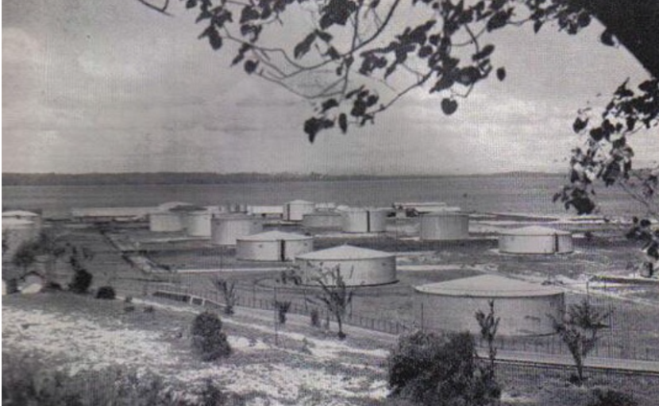
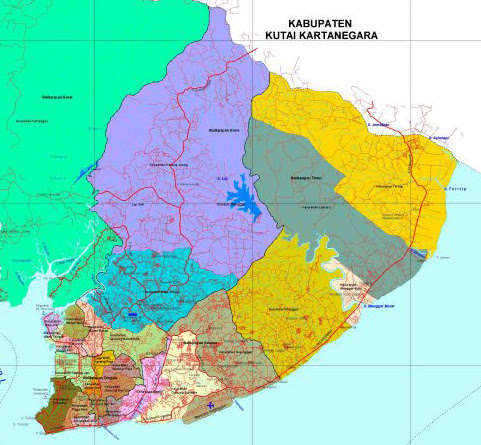

Sejarah

Balikpapan memiliki sejarah yang panjang, terutama dalam industri
minyak dan gas. Sejarahnya bermula sekitar abad ke-19, ketika
kawasan ini masih berupa perkampungan nelayan. Nama "Balikpapan"
diyakini berasal dari kisah rakyat tentang papan kayu yang digunakan
sebagai rakit yang kemudian terbalik di perairan sekitar. Pada 10
Februari 1897, pengeboran minyak pertama dilakukan di Balikpapan
oleh perusahaan minyak Belanda, Mathilda, yang menemukan sumur
pertama di wilayah ini, menjadikannya salah satu kota minyak pertama
di Indonesia.
Filosofi Kota Balikpapan tercermin dalam semboyan "Manuntung," yang
dalam bahasa lokal berarti tuntas, atau menyelesaikan segala sesuatu
hingga selesai dengan baik. Semboyan ini menggambarkan semangat
masyarakat Balikpapan untuk menyelesaikan setiap pekerjaan dengan
penuh tanggung jawab, integritas, dan ketekunan. Prinsip ini
menunjukkan komitmen kota untuk memberikan pelayanan yang terbaik
bagi warganya dan mendukung pembangunan yang berkelanjutan dan
merata.
Geografis

Balikpapan adalah sebuah kota yang terletak di pesisir timur pulau
Kalimantan, Indonesia, tepatnya di provinsi Kalimantan Timur. Kota
ini berada di sebelah xselatan Teluk Balikpapan dengan koordinat
sekitar 1°15′S dan 116°52′E, serta memiliki luas wilayah sekitar
503,96 km². Topografi Balikpapan sebagian besar terdiri dari dataran
rendah, meskipun terdapat beberapa daerah berbukit. Dengan iklim
tropis yang ditandai suhu rata-rata berkisar antara 24°C hingga
31°C, Balikpapan juga mengalami curah hujan yang tinggi, terutama
pada bulan-bulan tertentu. Dikelilingi oleh hutan tropis, kota ini
memiliki keanekaragaman hayati yang kaya, termasuk flora dan fauna
khas Kalimantan. Selain itu, Balikpapan merupakan salah satu pusat
industri dan ekonomi di Kalimantan, dengan sektor utama seperti
minyak dan gas, pertambangan, serta perdagangan. Bandara
Internasional Sultan Aji Muhammad Sulaiman juga melayani kota ini,
menghubungkannya dengan berbagai daerah di Indonesia dan luar
negeri.
Wisata
Danau yang berlokasi di Jalan Rawamangun, Kelurahan Lamaru,
Kecamatan Balikpapan Timur ini memiliki panorama yang begitu cantik
dan asri. Danau Lamaru disebut juga Danau Cermin, karena jernihnya
air danau mampu memantulkan bayangan pepohonan di sekitarnya
sehingga tampak menyerupai cermin.
Danau Cermin Lamaru terbentuk secara tidak sengaja mulai sekitar
2009. Kala itu, kawasan tersebut merupakan tempat latihan menembak,
yang kemudian dikembangkan menjadi proyek khusus. Akan tetapi,
proyek tersebut tidak selesai dan meninggalkan sebuah cekungan.
Lambat laun, cekungan tersebut berubah menjadi sebuah danau indah
dengan air yang jernih berwarna biru kehijauan.